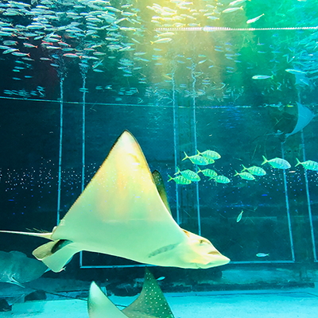
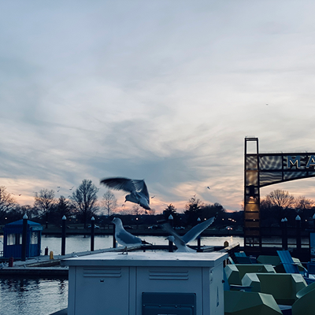
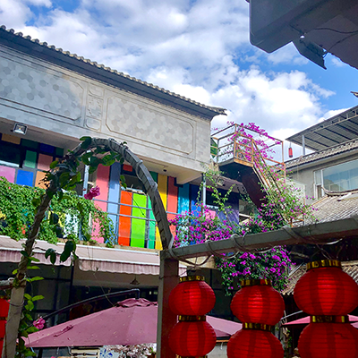
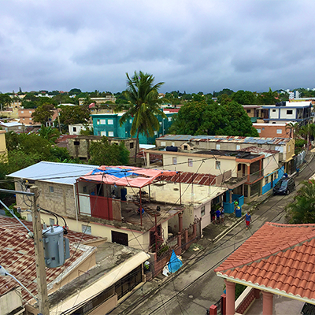

I am a big fan of traveling. I've been to around ten different countries now. Among all the countries I've visited, my favorite one is Japan. I really love the food, the preservation of history everywhere in the country, and the politeness that Japanese displayed. But this can still change in the future after I visit more countries. Here are some photos I took during my recent journeys.
   